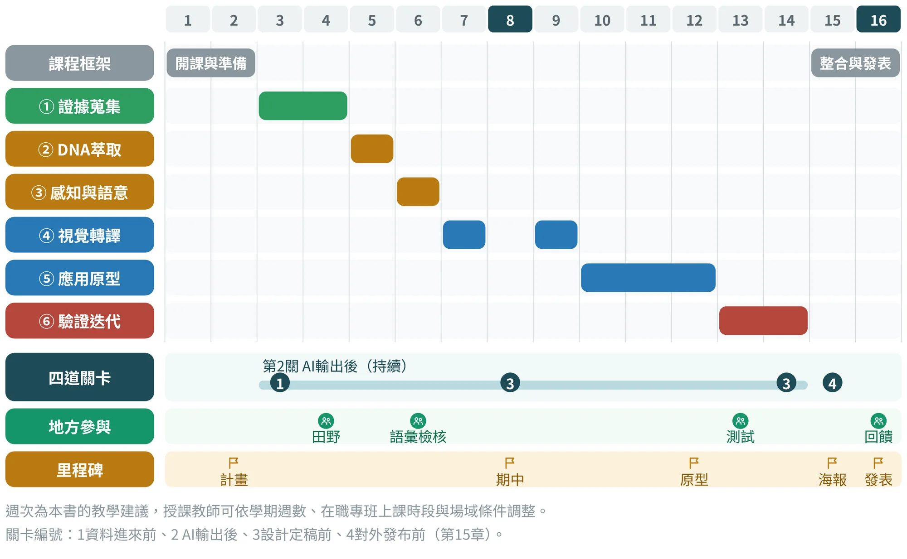
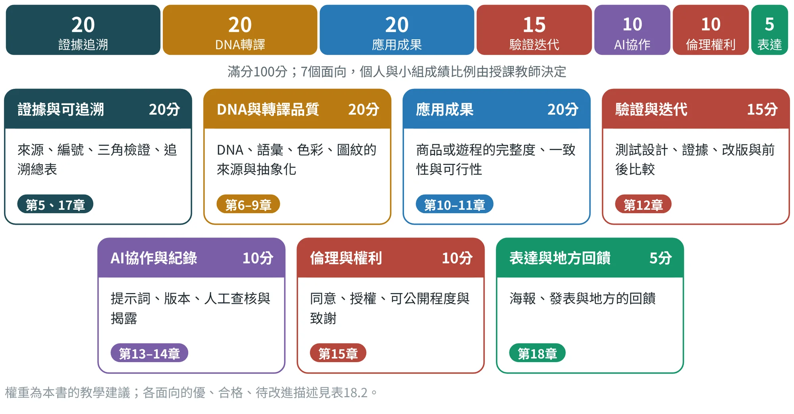
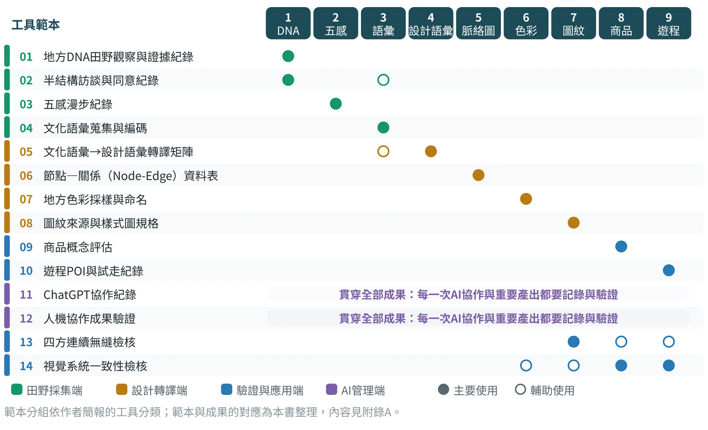
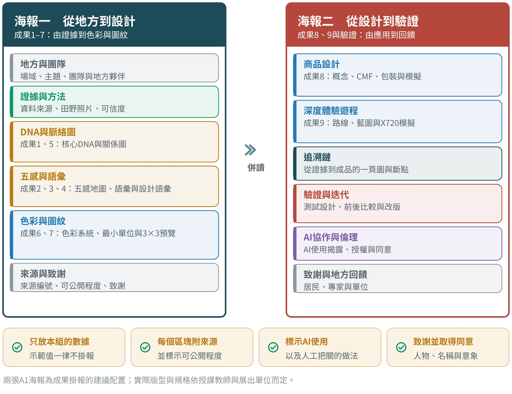
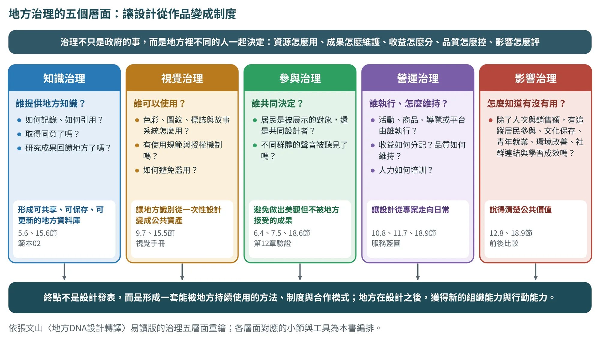

課程實施與成果評量
把一學期16週排成可執行的課表，用七個面向評量，並把成果交回地方

18.1課程定位與學習成果#
本書設計為一學期的專題式課程教材，適合「地方創生智能設計碩士在職專班」的研究生分組進行：每組以一個真實的地方場域為對象，從田野證據開始，完成九項成果中的主線，並以商品或遊程作為應用。在職研究生通常已有工作與地方的連結，這是優勢：場域、人脈與問題意識都可以取自自己的生活圈。以下的課程安排是本書的教學建議，授課教師可依學期週數、上課時段與場域條件調整。
修完這門課，期望學生能夠：
- 取得證據。 用田野與文獻方法，建立可追溯、有三角檢證的地方資料庫（第5章）。
- 萃取與轉譯。 從DNA走到語彙、色彩與圖紋，每一步說得出來源與抽象化過程（第6至9章）。
- 完成應用並驗證。 做出商品或遊程的原型，與居民、專家與使用者一起驗證與迭代（第10至12章）。
- 與AI協作。 守住「分析邊界等於地方證據」的原則，留下可重現的紀錄（第13、14章）。
- 尊重地方。 取得同意、處理授權，並把成果交還給地方（第15、18章）。
18.2十六週課表#
圖18.1把16週放在六個階段上：前兩週是開課與準備，第3至14週依序走完六個階段，最後兩週整合與發表。圖中同時標出四道關卡的位置、需要地方參與的四個時點，以及五個里程碑。表18.1則列出每週的主題、對應章節、課堂活動與本週交付。

| 週 | 主題 | 對應章 | 課堂活動 | 本週交付 |
|---|---|---|---|---|
| 1 | 開課：為什麼先理解地方 | 第1–3章 | 講授三階段與九項成果；分組；選定場域與地方夥伴 | 分組名單、場域候選 |
| 2 | 方法論、倫理與AI規則 | 第4、13、15章 | 專案計畫（W0）；同意說明與訪談大綱；P0與AI使用規則 | 專案計畫書、同意說明 |
| 3 | 證據蒐集（一）：文獻與檔案 | 第5章 | 證據矩陣、來源可信度與三角檢證（W1） | 證據矩陣初稿（範本01） |
| 4 | 田野週：觀察、訪談、採樣 | 第5章 | 現場觀察、訪談與五感採集；照片與錄音須附同意 | 田野與訪談紀錄（範本01–03） |
| 5 | DNA萃取與脈絡分析 | 第6章 | 五類DNA編碼、核心與次核心；Node-Edge脈絡圖 | 五類DNA表、脈絡圖（範本06） |
| 6 | 感知與語意 | 第7章 | 文化語彙編碼；居民檢核會；設計語彙轉譯 | 語彙編碼表、轉譯矩陣（範本04、05） |
| 7 | 地方色彩 | 第8章 | 色彩採樣、命名與對比檢核 | 色彩採樣與命名表（範本07） |
| 8 | 期中審查 | 第12、15、17章 | 階段1至4的成果報告；關卡3；追溯總表初版 | 期中簡報、追溯總表 |
| 9 | 地方圖紋與四方連續樣式圖 | 第9章 | 抽象化、最小單位、3×3與5×5預覽 | 圖紋規格與無縫檢核（範本08、13） |
| 10 | 應用（一）：POI與需求 | 第10或11章 | 商品POI、任務書、VPC與QFD；或遊程POI與路線 | POI資源池、任務書（範本09或10） |
| 11 | 應用（二）：概念與深化 | 第10或11章 | 三個概念與評估、CMF與包裝；或路線與服務藍圖 | 三個概念、深化方案 |
| 12 | 原型與試走準備 | 第10或11章 | 低擬真與高擬真原型、成本與通路；或試走計畫 | 原型、BOM或試走計畫 |
| 13 | 驗證：測試與居民檢核 | 第12章 | 概念與原型測試、居民與專家檢核；改版矩陣 | 測試紀錄、改版清單 |
| 14 | 迭代、永續與AI驗證 | 第12、13、16章 | 改版與前後比較；永續轉譯六步檢核；協作紀錄與驗證 | 改版版本、範本11、12 |
| 15 | 成果整合 | 第15、17、18章 | 追溯總表與反向審查；兩張A1海報；AI使用揭露與致謝；關卡4 | 海報初稿、追溯總表、同意清單 |
| 16 | 成果發表與地方回饋 | 第18章 | 發表（邀請居民、專家與合作單位）；回饋與致謝；課程評量 | 最終海報、學習歷程檔案 |
課表為本書的教學建議；範本編號對應附錄A。商品與遊程建議擇一為主；若兩者都做，請共用POI與DNA（第17章）。
課表有三個設計重點。第一，第4週是田野週，是整個課程中最不能壓縮的時間；證據不足，後面各週都在做沒有根的事。第二，第8週的期中審查是第一次完整的關卡檢查，用追溯總表看各組的斷點，並請小組以外的人做反向審查（第17章）。第三，第13週的驗證要有地方的人在場，居民、專家或使用者的回饋，才是改版的依據。
18.3評量：七個面向#
評量要回答的問題是：這份成果，經得起追問嗎？本書建議用七個面向評分，總分100分（圖18.2）。前三項（證據、轉譯、應用）占六成，是成果本身的品質；驗證、AI協作與倫理占三成五，是做事的方法與態度；最後的表達與地方回饋占五分，提醒成果最後要交回地方。

每個面向用三級描述作為評分依據（表18.2）。評分時請對照小組的證據，而不是印象；在評語中直接引用證據的位置，學生才知道怎麼改。
| 面向（權重） | 優 | 合格 | 待改進 |
|---|---|---|---|
| 證據與可追溯（20） | 每個成果元素都有來源編號；核心DNA有兩種以上獨立來源；追溯總表完整，斷點已排任務 | 多數元素有來源；核心DNA有兩種來源；追溯總表有部分空白 | 來源不明或單一，無法追溯 |
| DNA與轉譯品質（20） | DNA有層級與取捨理由；語彙經居民檢核；色彩圖紋有採樣來源與抽象化過程 | DNA、語彙、色彩與圖紋都有，但檢核或過程紀錄不完整 | 以常識或模式化意象代替地方證據 |
| 應用成果（20） | 商品或遊程完整，與DNA一致，可行性已評估，有模擬或試走 | 完整度足夠，但一致性或可行性有缺口 | 只有概念，與前面成果脫節 |
| 驗證與迭代（15） | 測試設計合理；保留分布與少數意見；改版有證據，並做前後比較 | 有測試與改版，但證據連結或比較不完整 | 沒有測試，或只用平均數 |
| AI協作與紀錄（10） | 提示詞、版本與人工修正完整；重要產出有成果驗證；揭露清楚 | 有紀錄，但不完整 | 沒有紀錄，或AI輸出未經查核就採用 |
| 倫理與權利（10） | 同意與授權有書面留存；標註可公開程度；敏感素材經決策樹處理 | 主要同意已取得，標註有缺漏 | 未取得同意就使用敏感素材 |
| 表達與地方回饋（5） | 海報清楚、只用本組數據；發表後有地方回饋並記錄 | 海報完整，回饋紀錄簡略 | 示範值掛報，或沒有地方回饋 |
權重與描述為本書的教學建議，授課教師可依課程目標調整；個人與小組成績的比例，可搭配個人學習歷程與協作紀錄決定。
有幾種情況，不能靠美感加分來抵銷，應該先退回修正：虛構訪談、把模擬數據當成實測，或未經同意就公開資料。處理方式依課程與學校的規範。相反地，誠實發現方案不可行，並提出有證據的轉向，也可以是良好的研究成果。
18.4繳交什麼：九項成果、最低證據包與十四份範本#
第5至11章每一章都列出了該成果的「最低成果證據包」，也就是繳交時至少要有的東西。表18.3把九項成果的證據包放在一起；圖18.3則顯示十四份工具範本各自支援哪些成果：田野採集端（範本01至04）、設計轉譯端（範本05至08）、驗證與應用端（範本09、10、13、14）與AI管理端（範本11、12）。
| 成果 | 最低成果證據包 | 範本 | 章 |
|---|---|---|---|
| 1 地方DNA | 五類DNA證據表＋3–5位關鍵受訪者或代表性文本＋照片／地圖證據＋DNA層級與來源註記 | 01、02 | 第5、6章 |
| 2 五感 | 至少1條感官漫步紀錄＋五感地圖＋感官強度與情緒資料＋3個以上可設計觸點 | 03 | 第7章 |
| 3 文化語彙 | 文化語彙來源清單＋編碼與分群規則＋核心語彙10–20項＋居民或專家檢核 | 04 | 第7章 |
| 4 設計語彙 | 文化語彙→設計語彙對照矩陣＋造型、色彩、材質示例＋辨識度與適切性評估 | 05 | 第7章 |
| 5 脈絡分析圖 | 節點—關係資料表＋可讀的脈絡圖＋關鍵轉譯機會點註記 | 06 | 第6章 |
| 6 地方色彩 | 每個色彩的採樣來源、名稱、RGB／CMYK／HEX與角色（主、輔、強調）＋居民語意驗證 | 07 | 第8章 |
| 7 地方圖紋 | 來源照片→抽象化→線稿→黑白稿→彩色稿→最小單位→四邊對位→3×3、5×5預覽＋組織說明＋至少3種應用示意 | 08、13 | 第9章 |
| 8 特色商品 | 3個概念方案＋需求與競品依據＋1案深化＋商品與包裝模擬＋概念測試結果（用圖紋者另附最小單位、預覽與版型應用） | 09、13、14 | 第10章 |
| 9 深度遊程 | POI清單＋路線圖＋Journey Map＋服務藍圖＋試走紀錄＋X720平台模擬 | 10、14 | 第11章 |
最低成果證據包依作者〈地方DNA設計轉譯彙整表〉的建議整理；範本與成果的對應為本書整理，範本內容見附錄A。

範本11與12貫穿全部成果：每一次重要的AI協作，都記入範本11；重要產出，都以範本12驗證。範本13與14則在圖紋、商品與遊程進入定稿之前，做技術與一致性的最後檢查。
18.5兩張A1成果海報#
成果以兩張A1海報掛報（圖18.4）。建議第一張談「從地方到設計」，涵蓋成果1至7，由證據、DNA、五感與語彙，一直到色彩與圖紋；第二張談「從設計到驗證」，放商品與遊程（成果8、9）、追溯鏈、驗證與迭代、AI協作與倫理，以及致謝。兩張併讀，就是一條從田野走到應用的完整鏈。

- 只放本組的數據。 本書示範中的分數、價格、測試與同意狀態，一律不掛報。
- 每個區塊附來源，並標示可公開程度。 未取得同意的照片、錄音與名稱，不上海報。
- 標示AI使用。 以簡短的揭露說明，寫明哪些階段使用AI、人如何把關（第13章）。
- 致謝並取得同意。 提供資料與審訂的居民、職人與單位，依其意願署名；涉及名稱與意象，須取得書面同意（第15章）。
各區塊的重點句與說明文字，可以請AI協助撰寫，但只能使用小組提供、且已確認的內容（參見附錄B的P9-1）。海報定稿前，請再做一次反向審查：從海報上抽三個元素，追回田野證據。
10分鐘口頭發表的建議順序
期末發表可以用10分鐘為例（表18.4）。重點是讓聽者知道哪些假設被推翻、目前能支持什麼、還缺什麼，而不只是展示完成的美圖。兩張海報也要共同回答「為什麼這樣設計」：第一張呈現來源如何成為規則，第二張呈現規則如何成為可使用的方案與驗證；圖文的比例依資料調整，不必平均切成九個等大的方格，主張、證據與關鍵取捨要有明確的層級。
| 時間 | 內容 | 要讓聽者知道 |
|---|---|---|
| 0–2分鐘 | 問題、對象與證據 | 為什麼值得做；資料從哪裡來 |
| 2–4分鐘 | DNA、語彙與轉譯 | 如何從地方走到設計規則 |
| 4–7分鐘 | 原型、四層商品或遊程 | 實際如何使用；誰負責 |
| 7–9分鐘 | 測試、改版與取捨 | 哪些假設被推翻；如何修正 |
| 9–10分鐘 | 限制、移交與下一步 | 目前能支持什麼；還缺什麼 |
依以下的九項成果、原型與測試：【貼上】，安排兩張A1海報與10分鐘發表。為每個主要主張列出對應的證據與圖表位置，刪除沒有來源的裝飾性說法，並標示模擬數據與尚未完成的驗證。不要補造成果，也不要用華麗的文案掩蓋缺口。
W14為整合時新增的提示詞，原則與P0相同。
18.6與地方一起教：四個地方參與的時點#
簡報中有一句話：「設計的最終詮釋權，永遠在地方」。課程要讓這句話落實，需要在課表中預先安排地方參與，而不是最後才邀請。課程地圖（圖18.1）標出四個時點：
- 第4週，田野。 與居民、職人與單位建立關係，說明來意與用途，並取得照片、錄音與訪談的同意。
- 第6週，語彙檢核。 召開居民檢核會，用5點量表加開放意見，檢查文化語彙與設計語彙是否像這個地方（第12章）。
- 第13週，測試。 邀請居民、使用者與通路業者參與概念與原型測試，保留分布與少數意見。
- 第16週，發表與回饋。 邀請地方夥伴出席發表，記錄回饋，並致謝。
課程結束後，建議把成果交還給地方：提供授權單位成果海報與簡報，並說明哪些內容仍是待確認或示範假設。這是對提供協助的人最起碼的尊重，也讓下一屆的同學，有一個可以接續的起點。
18.7常見的教學問題與對策#
表18.5列出實施這門課時最常遇到的八個問題，並提供對策，給授課教師與助教參考。
| 問題 | 對策 |
|---|---|
| 田野時間不夠（在職生） | 以工作地或生活圈為場域；田野週集中在一至兩個週末；公開資料先行，現場只做補強與驗證。 |
| 找不到居民或專家 | 第2週前先列出地方夥伴；以地方組織、文史工作者與公所為窗口；教師協助引介。 |
| 小組過度依賴AI | 要求提示詞代碼與協作紀錄（範本11）；用W7做邊界檢查；期中抽查沒有來源的句子。 |
| 示範資料被直接沿用 | 示範用來說明方法；評量時查對來源編號與數據；示範值一律不掛報。 |
| 成員貢獻不均 | 以個人學習歷程與協作紀錄佐證貢獻；個人與小組成績各占一定比例；期中與期末互評。 |
| 商品與遊程都想做 | 建議擇一為主；兩者都做時共用POI與DNA，以第17章的方式互相追溯。 |
| 授權遲遲拿不到 | 概念階段就列出授權門檻；準備備案與替代素材；成果中誠實標示待確認。 |
| 時間不足以完成所有成果 | 先保證主線：成果1至4、6、7，加上商品或遊程；脈絡圖與次要成果可精簡；斷點保留，不虛構。 |
在職班與兩個單元的調整
若課程分成國內與國際兩個單元，可以把前半學期作為國內的方法練習，後半學期作為第二個場域的比較與深化。第二個單元若尚未實地見學，成果必須稱為「桌面研究與田野計畫」，不能假裝已經完成現地驗證。國際場域可以沿用同一套證據表，但語言、文化、季節與資料取得的方式，都要重新設計。
跨國比較應使用同一個問題與相近的分析尺度，例如「地方技藝如何進入旅客日常」，而不是拿一個城市和一間商店比較優劣。先承認資料的不對稱，再決定哪些觀點可以互相借鏡。
案例研討：九個案例，一堂課
九個案例的驗證卡可以直接變成課堂活動。下表（表18.6）是一堂90分鐘的安排：分成九組（或三組各領三個案例），每組領一個案例，先不看答案，用六道驗證自己打一次分，再和17.6節對照。
| 時間 | 活動 | 產出 |
|---|---|---|
| 0至10分鐘 | 導入：講3.6節的六道驗證與三級判準，用崙背示範打一格（例如V1） | 全班對齊判準 |
| 10至40分鐘 | 各組領一個案例的材料（簡報、提案或設計稿的節錄），不看17.6節，先用表C.13自己打一次 | 一張自評的驗證卡 |
| 40至60分鐘 | 與17.6節對照，標出評等不同的格子，寫出理由 | 差異清單 |
| 60至80分鐘 | 跨組交換：每組向另一組說明「這個案例最該補的一件證據」 | 三句話的田野任務 |
| 80至90分鐘 | 總結：討論哪一欄最常是缺口，為什麼 | 一段反思 |
時間分配為教學建議，可依班級人數調整；案例材料以17.6節各案例所列的來源為準。
18.8期末自評：請AI整理證據，但不讓AI評分#
期末交件之前，小組可以用評量表自評。AI適合做的是「對照」：把評量描述與小組的證據清單放在一起，列出已有與缺少的證據。但它不能打分數，也不能替小組補寫證據；沒有檔名的證據，一律視為「尚無」。
以下是評量面向與三級描述：【貼上表18.2】；以及我們的證據清單（成果、檔名、一句說明）：【貼上】。請依每個面向列出：已有的證據（附檔名）｜缺少的證據｜可能被扣分的地方與原因。你不評分，也不替我們補寫證據；清單中沒有檔名的證據，一律視為「尚無」。不要補充清單以外的內容。
W12為本書補充的提示詞，原則與P0相同：只依提供的資料、未知標待確認、判斷留給人。
18.9設計完成之後：營運、治理與研究#
地方設計的終點不是期末展。移交時至少要說明：誰能修改圖紋、誰更新POI、誰補貨與維修、誰處理文化內容的異議，以及資料存放與交接的方式。沒有維護角色的數位導覽，或沒有持續供應條件的商品，很容易在課程結束後就停止運作。
文化合作要持續對話與回饋。第15章提到的知情同意原則〔文10〕，在專案實踐中可以轉成內容共同審訂、使用範圍、回饋方式與退出處理；它不應被簡化成「簽過一次名字，便永遠可以使用」。
地方治理的五個層面
地方設計如果想長期發揮作用，最後一定會碰到治理。治理不是只有政府的事，而是地方裡不同的人一起決定：資源怎麼使用？成果怎麼維護？收益怎麼分配？品質怎麼控管？影響怎麼評估？作者的易讀版把它整理成五個層面（圖18.5）。

| 治理層面 | 核心問題 | 具體做法 | 本書工具與位置 |
|---|---|---|---|
| 知識治理 | 地方知識由誰提供？如何記錄、如何引用？是否取得同意？研究成果是否回饋地方？ | 建立可共享、可保存、可更新的地方資料庫或知識平台；知識不被外部團隊單向帶走 | 證據矩陣（5.3）、同意紀錄（15.6）、範本02 |
| 視覺治理 | 色彩、圖紋、標誌與故事系統如何被使用？有使用規範與授權機制嗎？如何避免濫用？ | 視覺手冊與分級使用，讓地方識別從一次性設計變成公共資產 | 9.7、15.5節 |
| 參與治理 | 地方提案由誰共同決定？居民是被展示的對象，還是共同設計者？不同群體的聲音被聽見了嗎？ | 在田野、語彙檢核、測試與決策點安排居民與專家參與，避免做出美觀卻不被地方接受的成果 | 6.4、7.5、18.6節、第12章 |
| 營運治理 | 活動、商品、導覽、服務或平台由誰執行？收益如何分配？品質如何維持？人力如何培訓？ | 服務藍圖、移交清單、維護責任人與更新日期，讓設計從專案走向日常 | 11.7、11.8、10.8節 |
| 影響治理 | 如何評估成果？除了人次與銷售額，是否追蹤居民參與、文化保存、青年就業、環境改善、社群連結與學習成效？ | 前後比較與迭代紀錄；把成果寫成公共價值，才說得清楚為什麼值得持續 | 12.8、16.6節 |
五個層面與核心問題依張文山〈地方DNA設計轉譯：從地方知識萃取到永續設計實踐的方法論〉（易讀版，2026年7月）整理；「具體做法」與「本書工具與位置」為本書編排。附錄C的表C.12提供自檢清單，附錄B.7的M5可協助檢查文件。
所以，地方DNA設計轉譯的終點不是設計發表，而是形成一套能被地方持續使用的方法、制度與合作模式。真正成熟的地方設計，不是外部設計者完成作品後離開，而是地方能在設計之後，獲得新的組織能力與行動能力。
把設計實作轉成研究問題
設計實作若要寫成論文，要先明確研究問題與分析方法，再說明原型如何成為研究工具。漂亮的成果可以是研究的產出，但不能單獨證明方法有效。個案研究、行動研究與設計研究各有各的要求，要依研究目的選擇，而不只是在章名裡排列方法的名稱。表18.8舉出四個可以延伸的研究問題。
| 研究問題示例 | 可採資料 | 能支持的貢獻 |
|---|---|---|
| 來源可追溯性，是否改善設計判斷？ | 版本、評圖理由、來源查找任務 | 提出可檢查的交接方法 |
| 不同的抽象程度，如何影響地方辨識？ | 未提示的辨識、文化回應與原型比較 | 說明語彙與形式的適用範圍 |
| 商品如何承接遊程之後的使用？ | 試走、回家後的日誌、追訪 | 理解體驗延續的條件 |
| AI協作如何影響編碼與決策？ | 提示詞、人工修改、反思紀錄 | 區分效率、偏誤與判斷責任 |
依以下的專案成果與歷程：【貼上】，列出營運交接、資料權限、維護角色、未解決的問題與下一輪研究。把「已支持的發現」「案例的限制」與「可轉移的方法」分開；提出兩個可研究的問題及所需的證據，不要把單一個案或模擬結果推論成普遍的成效。
W15為整合時新增的提示詞，原則與P0相同。
最後回到本書的起點：地方DNA是協助理解與行動的工作方法。好的設計，讓資料可以回溯、讓意義可以討論、讓作品可以使用、讓地方有能力持續參與。不同場域的答案可以不同，但判斷與責任應該清楚地留下來。
結語：地方DNA不是過去的束縛，而是未來創新的根源
地方DNA設計轉譯的核心主張，是地方不只是被保存的過去，也不只是被消費的特色，而是能生成未來創新的根源。地方的價值，不在於它是否符合外部市場對「特色」的想像，而在於它是否擁有值得被重新理解、重新組織與重新實踐的知識。
對地方創生而言，這套方法提醒我們：創生不是替地方製造新奇，而是讓地方內在的生命力重新被看見。對社會設計而言，它提醒我們：設計不是替他人解決問題，而是與地方共同建立理解、參與與行動的條件。對永續發展而言，它提醒我們：真正的永續，不只發生在國際指標與政策文本中，也發生在地方如何管理資源、延續文化、組織社群與面對環境變化的日常實踐裡。
地方魅力不是被發現的自然事實，而是經過研究與轉譯而被建構的公共語言；地方設計也不是成果展示的終點，而是地方重新進入當代生活、產業與治理系統的開始。所以，地方DNA設計轉譯不只是一門課、一套工具或一種設計方法，它更是一種面對地方的態度：尊重地方的時間，理解地方的關係，看見地方的本質，轉譯地方的價值，並且和地方一起生成面向未來的永續行動。